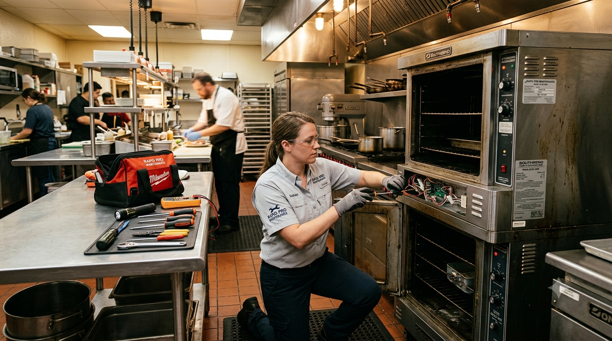

Fast, Reliable Service from Memphis' Kitchen Equipment Experts
Ovens are one part of our commercial cooking equipment repair in Memphis. If your oven just stopped heating, our commercial oven troubleshooting guide covers the quick checks worth doing before you call.
When a convection oven browns one side of a pan, takes too long to recover, or overshoots its setpoint, we compare the displayed temperature with the actual cavity temperature. We test the probe or thermostat, fan motor, heating elements or burners, contactors, door switch, and gasket to isolate the fault.
Weak burners, yellow flames, pilots that will not hold, and an oven base that will not maintain temperature do not all point to the same part. We inspect burner ports and air shutters, pilot assemblies, thermocouples or thermopiles, safety valves, thermostats, and gas controls before recommending a repair.
For deck ovens, we track scorched or underbaked spots through the thermostat or temperature probe, burners or elements, door seal, and the condition of the baking deck. On conveyor ovens (see our commercial pizza oven repair page), we also check belt speed, drive components, blowers, and air-finger placement because heat and bake time have to work together. Running a Middleby Marshall or Lincoln Impinger? See our brand-specific troubleshooting guides.
Rotisserie ovens that stop turning, cook unevenly, or trip out mid-cycle usually come down to the spit drive motor and gears, the heating elements or burners, the door seals and glass, or the timer and temperature controls. We check each of those, along with the drip and grease system, where buildup is the most common cause of smoke and heat loss.
Scale in the steam circuit can cause slow steaming, water-level faults, poor rinsing, or repeated drain errors. Combi oven maintenance includes inspecting the fill and drain valves, water-level probes, temperature sensors, fan, door gasket, and wash system, then removing mineral buildup according to the manufacturer's procedure.
Commercial oven repair in Memphis typically ranges from $150-$500 depending on the issue. Common repairs include thermostat replacement, heating element repair, and igniter fixes. Call us at (901) 257-9417 for a free estimate with no hidden fees.
Uneven heating is usually caused by a faulty thermostat, broken heating element, damaged fan motor, or worn door gasket. For gas ovens, check the pilot light and thermocouple. Our EPA certified technicians can diagnose and repair same-day.
Commercial ovens should be professionally serviced at least every 6 months. High-volume restaurants may need quarterly maintenance. Regular service extends equipment life by 30-50% and helps you pass health inspections.
Yes! We repair Vulcan, Garland, Blodgett, Wolf, Hobart, and more. We service convection ovens, pizza ovens, combi ovens, rotisserie ovens, ranges, and deck ovens throughout Memphis, Germantown, Bartlett, and Collierville.
Absolutely. A pilot light that won't stay lit is typically caused by a faulty thermocouple, clogged pilot orifice, or defective gas safety valve. Don't operate equipment with gas issues - call (901) 257-9417 for same-day emergency service.
Contact us today for fast, professional Memphis commercial oven repair services.
Call (901) 257-9417